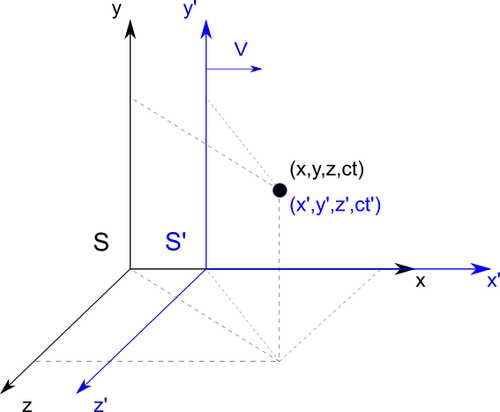

Hendrik Lorentz
18 July 1853 – 4 February 1928
Creator of: Lorentz Transformation
| Lorentz transformation | Relativistic velocities adding | Velocities adding example |
|---|---|---|
| Length contraction | Length contraction example |
Lorentz transformation
Let's say we have two systems \(S\) and \(S'\). The system \(S'\) is moving at a speed \(V_{x}\) in relation to the system \(S\). Observer in the each systems is going to define position of the object. From \(S\) perspective object has position \((x,y,z,ct)\) while from \(S'\) perspective \((x',y',z',ct')\). To know how the coordinates being transferred between systems we need to find linear transformation because movement is without acceleration. In this case:
\begin{equation}x' = ax + bt\end{equation}
\begin{equation}x = a'x' + b't'\end{equation}
Where \(a,b,a',b'\) are constants that we need to find.
Beginning of the \(S'(x' = 0)\)
system in \(S\) system is moving with velocity
\(V\) then:
$$0 = ax + bt \quad \Rightarrow \quad b = -a\frac{x}{t} = -av $$
Seting this result to the (1) equation, and knowing that system \(S\) is moving from system \(S'\) with velocity \(-V\), we get:
\begin{equation} x' = a(x - vt)\end{equation}
\begin{equation} x = a'(x' + vt')\end{equation}
Both systems are symmetrical, then \(a = a'\)
Let's send both light signal from each system from its beginning \(x=x'=0\) in the same time \(t=t'=0\). For light speed \(c\) we get:
\begin{equation} x' = ct'\end{equation}
\begin{equation} x = ct\end{equation}
Substituting now equations (5) and (6) to (3) and (4), we get:
\begin{equation} ct' = a(ct - vt) \end{equation}
\begin{equation} ct = a(ct' - vt') \end{equation}
Multiplying equations (7) and (8) by parties, we get:
$$c^{2}tt' = a^{2}tt'(c^{2} - v^{2}) $$
$$ \Rightarrow a^{2} =\frac{c^{2}}{c^{2}-v^{2}} $$
\begin{equation} \Rightarrow a = \frac{1}{\sqrt{1-\frac{v^{2}}{c^{2}}}} \end{equation}
Now we can write transformation equations for \(x\) and \(x'\) coordinates:
$$ x' = \frac{x - vt}{\sqrt{1-\frac{v^{2}}{c^{2}}}} $$
$$ x = \frac{x' + vt'}{\sqrt{1-\frac{v^{2}}{c^{2}}}} $$
To get time transformation we starting from equation (4) and transform to get \(t'\):
$$ t' = \frac{x}{av} - \frac{x'}{v} $$
Now we insert value \(x'\) from equation (3):
$$ t' = \frac{x}{av} - \frac{a^{2}(x-vt)}{av} $$
$$ \Rightarrow t' = \frac{a^{2}vt}{av} + \frac{x(1-a^{2})}{av} $$
Now inserting value \(a\) from equation (9) and after several transformations we get:
$$ t' = \frac{vt + x(1-\frac{v^{2}}{c^{2}}) - x}{v\sqrt{1-\frac{v^{2}}{c^{2}}}}$$
$$ \Rightarrow t' = \frac{t - x\frac{v}{c^{2}}}{\sqrt{1-\frac{v^{2}}{c^{2}}}}$$
Both systems move in relation to the coordinates \(x\), so the coordinates \(z\) and \(y\) are not transformed. All transformed coordinates are given below:
\begin{equation} x' = \frac{x - vt}{\sqrt{1-\frac{v^{2}}{c^{2}}}} \quad x = \frac{x' + vt'}{\sqrt{1-\frac{v^{2}}{c^{2}}}} \end{equation}
$$ y' = y \quad y = y'$$
$$ z' = z \quad z = z' $$
\begin{equation} t' = \frac{t - x\frac{v}{c^{2}}}{\sqrt{1-\frac{v^{2}}{c^{2}}}} \quad t = \frac{t' + x'\frac{v}{c^{2}}}{\sqrt{1-\frac{v^{2}}{c^{2}}}} \end{equation}
Relativistic velocities adding
Let say that we observing object that is moving with his own velocity in another system. We are staying in \(S\) system, the object and his system \(S'\) are moving away with velocity \(V\) from \(S\) system. Object it self is moving with another velocity \(u'\) from \(S'\) system. Using Lorentz transformations (10) and (11) we define velocity \(u'\) of the moving object in \(S'\) system as:
$$ u' = \frac{x'}{t'} = \frac{\frac{x - vt}{\sqrt{1-\frac{v^{2}}{c^{2}}}} }{\frac{t - x\frac{v}{c^{2}}}{\sqrt{1-\frac{v^{2}}{c^{2}}}}} = \frac{x - vt}{t - x\frac{v}{c^{2}}} \quad /t$$
\begin{equation} \Rightarrow u' = \frac{\frac{x}{t} - v}{1 - \frac{x}{t}\frac{v}{c^{2}}} = \frac{u - v}{1 - u\frac{v}{c^{2}}} \end{equation}
To get velocity of the object from \(S\) system frame, we need to transform above equation:
$$ u - v = u'(1 - u\frac{v}{c^{2}}) $$
$$ \Rightarrow u(u'\frac{v}{c^{2}} + 1) = u' + v$$
\begin{equation} u = \frac{u' + v}{u'\frac{v}{c^{2}} + 1} \end{equation}
Velocitis adding example
Two spaceships flying from each other in opposite directions with the same 0.9 light speed. What is the speed of one spaceship in term of second one. To calculate this we use (12) equation and put \(v = 0.9 c\) and \(u = -0.9 c\) ( \("-"\) indicates that velocity direction of one spaceship is opposite to the reference frame).
$$ \Delta u' = \frac{u - v}{1 - u\frac{v}{c^{2}}} = \frac{-0.9 - 0.9}{1 + 0.9\frac{0.9}{1^{2}}} = \frac{-1.8}{1.81} < |-1|c$$
Second spaceship is moving away from first one with absolute speed less then speed of light.
Length contraction
Let say that we observing object that is moving with his own velocity
in another system. We are staying in \(S\) system, the object and his system \(S'\) are
moving away with velocity \(V\) from \(S\) system.
The lenght of object in \(S'\)
system is simply calculated by:
$$ L' = x_{2}' - x_{1}'$$
The same object in \(S\) system will by calculated with:
$$ L = x_{2} - x_{1}$$
Where \(x_{1}\) and \(x_{2}\) are under the influence of Lorentz transformation thats why we need to use equations (10). Then we get proper length:
$$ L = \frac{x_{2}' + vt_{2}'}{\sqrt{1-\frac{v^{2}}{c^{2}}}} - \frac{x_{1}' + vt_{1}'}{\sqrt{1-\frac{v^{2}}{c^{2}}}} = \frac{x_{2}' - x_{1}' + vt_{2}' - vt_{1}'}{\sqrt{1-\frac{v^{2}}{c^{2}}}}$$
Flow of time is the same for all coordinates thats why \(t'_{1} = t'_{2}\). Simplifying abowe equation we get:
\begin{equation} L = \frac{x_{2}' - x_{1}'}{\sqrt{1-\frac{v^{2}}{c^{2}}}} = \frac{L'}{\sqrt{1-\frac{v^{2}}{c^{2}}}} \end{equation}
Length contraction example
Let say that we staing near railroad tracks and we observing person in train moving with speed of \(V\) = 144 km/h = 40 m/s = 0.04 km/s that holds in his hands a long stick. Length of the stick is \(L'\) = 10m becose the stic is moving alongside with \(S'\) train system. To calculate length of stic that we will se, we need to use equation (14):
$$ L = \frac{10}{\sqrt{1-\frac{0.04^{2}}{300000^{2}}}} = \frac{10}{0.9999999999999911} \approx 10m$$
Like you can se there is fast no lenght difference. To make this more visible we need to speed up the train. Let them move with speed of \(V\) = 0.5c, then we get:
$$ L = \frac{10}{\sqrt{1-\frac{0.5^{2}}{1^{2}}}} = \frac{10}{0.8660254037844386} \approx 11.55m$$
Now the length difference is much more visible. Difference will by about 1.55m.